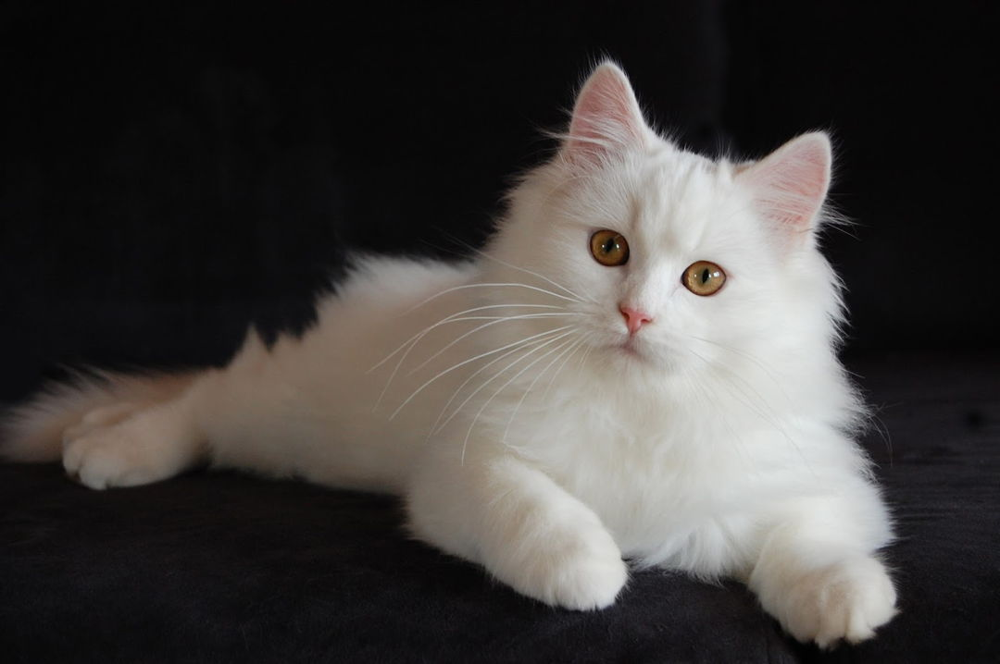
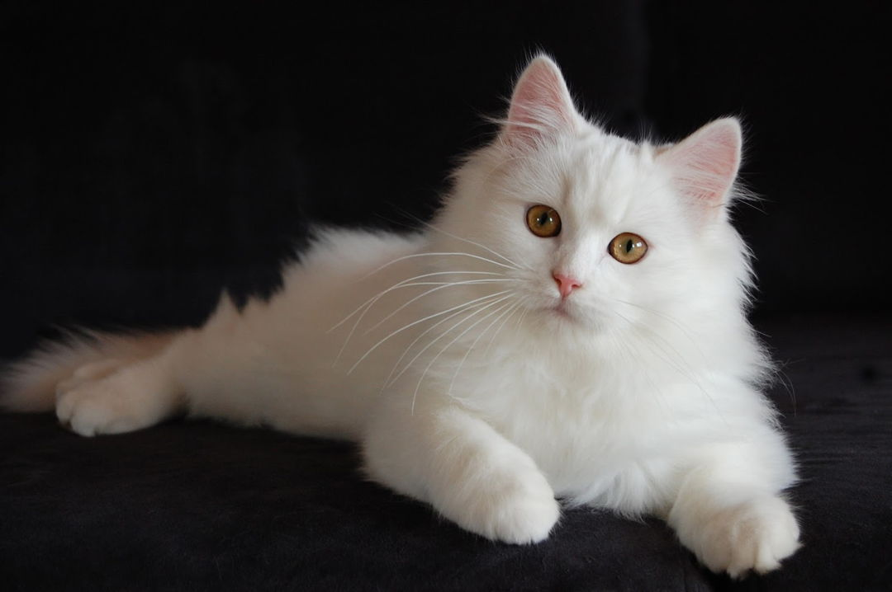
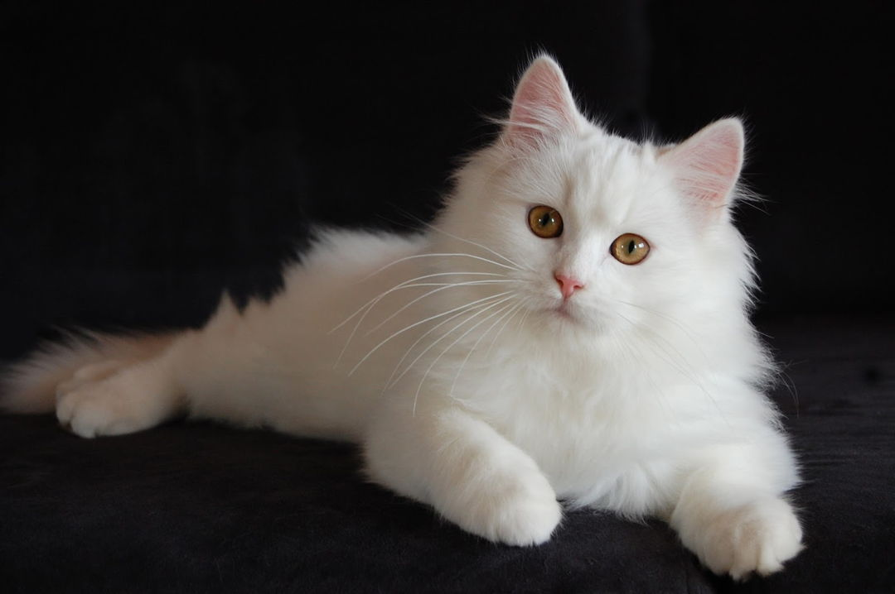

Popular Cat Breeds
 


Your go-to source for cat knowledge and fun facts

Cats are independent animals, but they still require proper care. Make sure your cat has a balanced diet, regular vet check-ups, and plenty of exercise and love.
Did you know? Cats spend around 70% of their lives sleeping! They are also capable of jumping up to six times their body length.